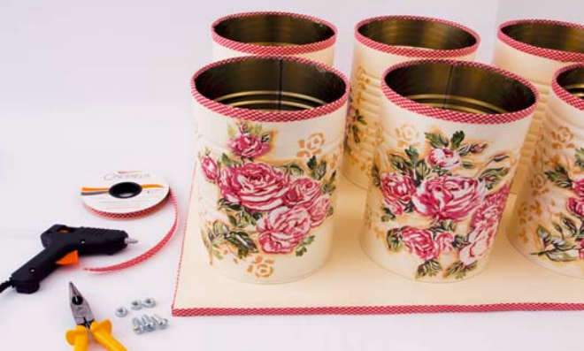
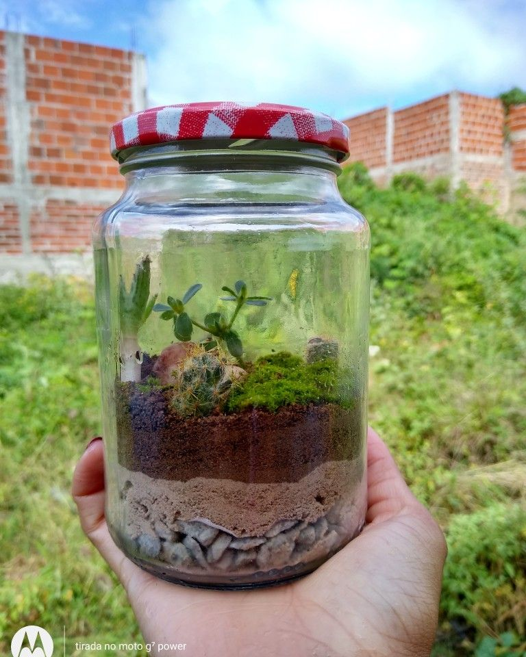

Deixe seu banheiro arrumado e lindo com um porta toalhas feito com Latas usadas.
Detalhes
Porta Toalha
Materiais necessários:
• 3 a 4 latas grandes, lavadas e sem rótulos.
• 1 tábua de madeira ou MDF (aproximadamente 15 cm de largura por 50 a 65 cm de comprimento, dependendo da quantidade de latas).
• Tinta spray ou esmalte sintético e tinta ou verniz para a madeira.
• Lixa fina
• Parafusos pequenos e 2 buchas com parafuso.
• Cola quente ou corda de sisal/fita isolante.
• Furadeira ou chave de fenda, martelo, régua, lápis e pincel (se não usar spray).
Passo a Passo:
Lave as latas com água e detergente e seque muito bem. Use um martelo para bater levemente na borda interna superior (onde a tampa foi retirada) para amassar qualquer rebarba cortante. Aplique uma demão de primer e depois 2 demãos da tinta escolhida nas lata. Deixe secar. Lixe a tábua de madeira e aplique verniz ou tinta impermeabilizante para protegê-la do vapor do banheiro. Para garantir que ninguém se corte ao pegar a toalha, cole uma tira de corda de sisal, tecido ou fita decorativa em volta da borda aberta de cada lata usando cola quente. Posicione as latas deitadas sobre a tábua para definir o espaçamento ideal entre elas. Marque com um lápis o centro onde cada lata vai ficar.
Faça um furo no fundo de cada lata e um furo correspondente nas marcas da madeira. Coloque o parafuso por dentro da lata, atravessando o fundo até prender firmemente na madeira. Faça dois furos nas extremidades da tábua de madeira. Marque a parede na altura desejada, fure com a furadeira, coloque as buchas e parafuse o porta-toalhas no lugar.Dobre as toalhas de rosto ao meio no sentido do comprimento, enrole bem firme e encaixe dentro das latas.
Prontinho!

Transformando seu Vidro de Conserva em Luminária
Detalhes
Luminária
Materiais necessários:
• Vidro limpo e vazio
• Fio PP
• Soquete E27
• 1 Lâmpada, ou um filamento de LED
• Furadeira
• Canopla
• Pé de galinha para niple
• Alicate e chaves de fenda
• Porcas e parafusos
Modo de preparo:
A primeira coisa que deve ser feita é um furo bem no centro da tampa do pote. Agora corte o fio e coloque os seus polos negativo e positivo no lugar certo. Para que isso seja feito, você deve descascar a ponta de cada um dos dois com a alicate. Depois que os fios estiverem preparados no soquete, basta colocar o parafuso. Aproveitando que você terá descascado um dos lados do fio, descasque também a outra extremidade, que será usada para ligar na parte elétrica da casa ou lugar onde a luminária ficará.
No fundo do soquete existe um niple pequeno. Após ter efetuado a ligação elétrica, você deve passar o cabo elétrico pela tampinha, colocando uma porquinha logo depois para que haja um maior revestimento. De agora pra frente já poderemos colocar a lâmpada! Pensando na instalação no teto, devemos utilizar mais uma porquinha, para a fixação. Como último passo, vamos rosquear a porca na canopla para pendurar no teto. Quando os fios tiverem sido passados e as porcas devidamente utilizadas a sua luminária finalmente estará pronta!o.

Que tal fazer um Terrário usando Pote de Vidro
Detalhes
Terrário
Materiais necessários:
• Pote de vidro com tampa
• Jornal, papel, papelão ou plástico
• Pedras, terra e musgos
• Colher e palito de madeira
• Sementes ou mudas de plantas de sua preferência, recomendamos usar suculentas, que são fáceis de cuidar e estão super em alta.
Modo de preparo:
Forre o local onde você vai trabalhar, com jornal, papel, papelão ou plástico. Adicione as pedras dentro do pote de vidro , com o auxílio da colher. Logo após, coloque a terra dentro do vidro, também com o auxílio da colher. Agora, comece a colocar na terra, o musgo, as sementes ou as mudinhas.
Em seguida, para finalizar a sua peça, termine de plantar na terra o que você quiser ou termine de posicionar musgos e mudinhas dentro do pote e coloque mais pedras ao redor das plantas. Depois tampe o vidro. E está pronto!